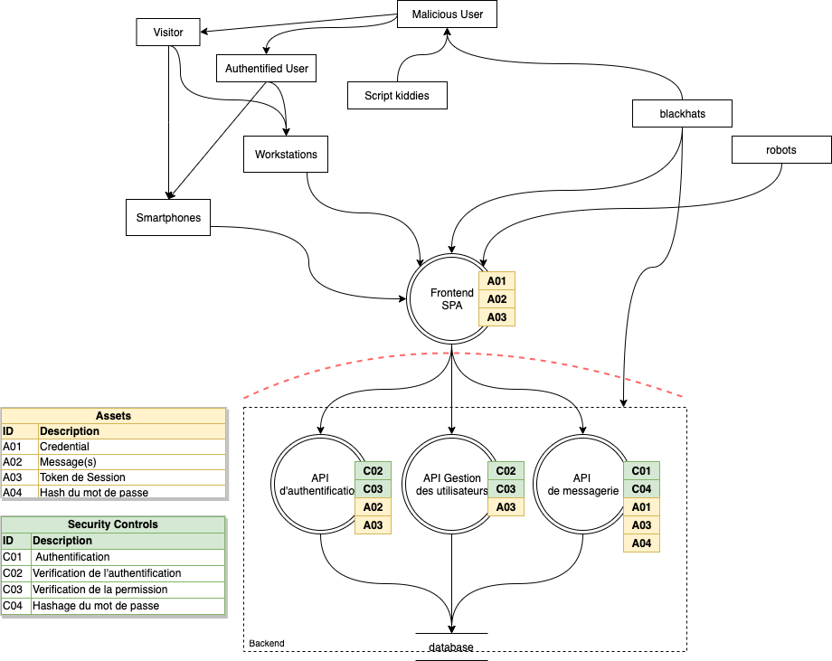

<<<<<<< HEAD

AES-CBC explained
Table des matières
- Introduction
- Analyse de Menace
- CSRF
- Bad crypto
- Echecs
- Conclusion
Introduction
- frontend SPA en vuejs
- backend API RESTful en expressjs
Analyse de Menaces
DFD

Points critiques
- L’intégrité
- La confidentialité
CSRF
Prérequis
- pas de cross-origine
- JSON valide
Tentatives d’attaques
Bad crypto
source des problèmes
- IV réutilisé
- AES-CBC
- IV malléable
Schéma CBC

Échec
- XSS - vuejs sanitize les inputs
- Injection SQL - sécurisé par Prepare Statements